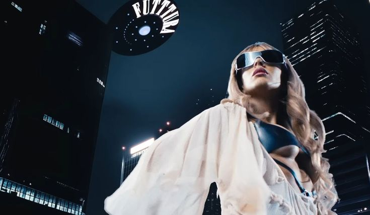
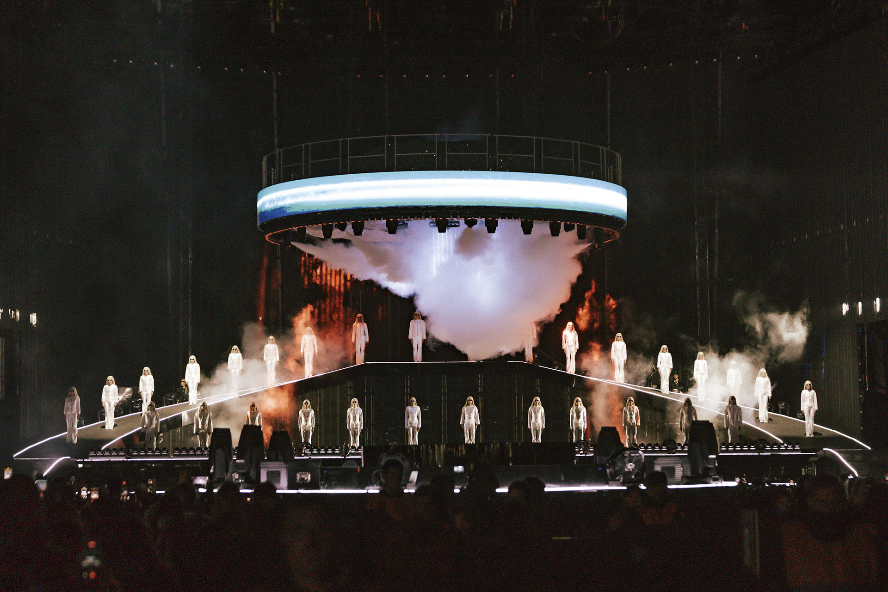
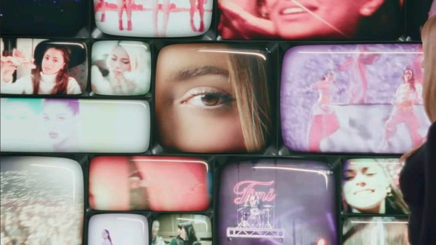
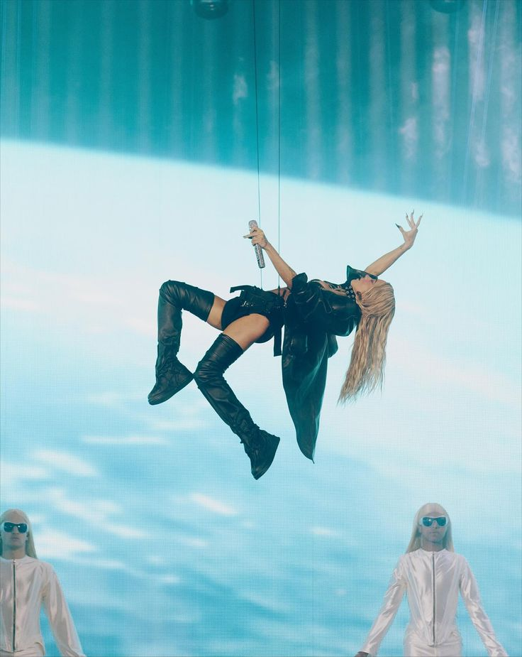
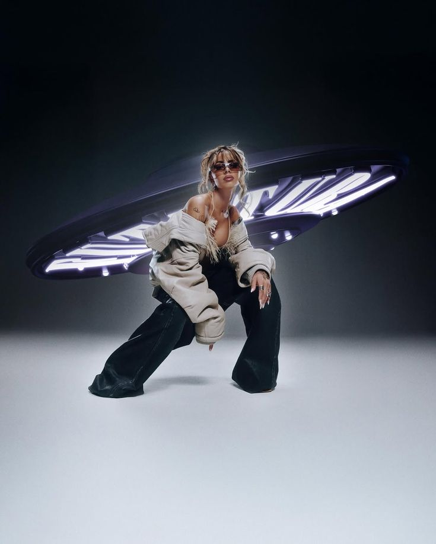
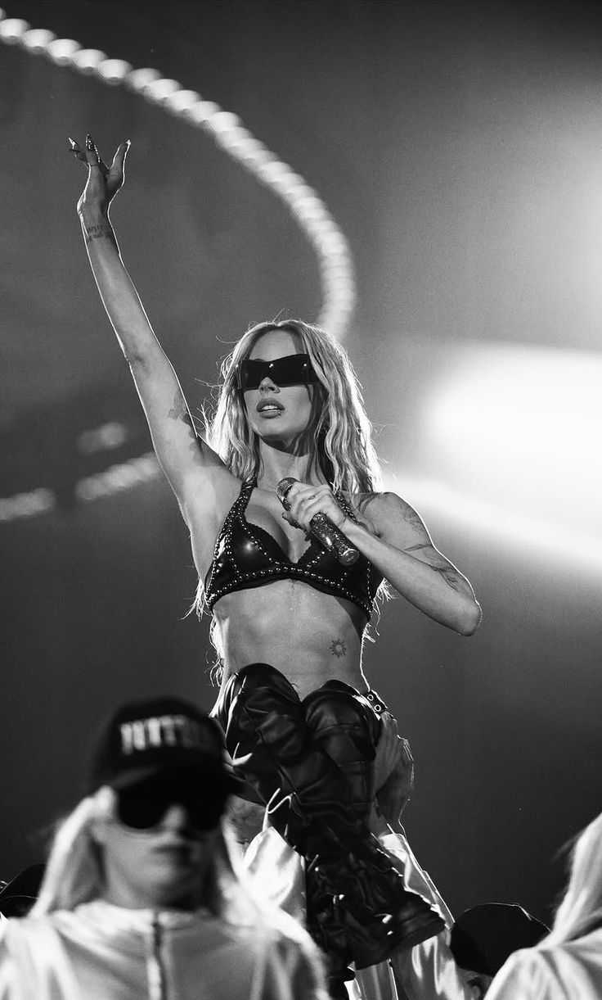
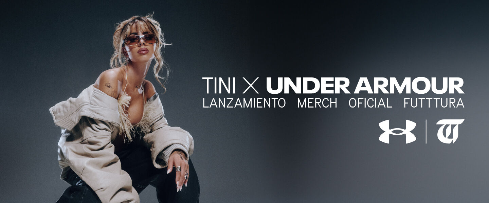

Un festival,
no un recital
TINI · FUTTTURA The Experience · 2025

Un festival de un solo artista
FUTTTURA propone algo inédito en Argentina: TINI diseñó una experiencia de día completo donde el público recorre espacios temáticos antes, durante y después del show. Música en vivo, visuales cinematográficos e instalaciones artísticas en un solo predio.

Tres escenarios en simultáneo
El escenario principal alberga el show central con producción de escala internacional. Los secundarios ofrecen performances íntimas y activaciones interactivas. El recorrido libre permite que cada persona construya su propia versión del evento.

Más de 42 canciones en vivo
Toda la discografía de TINI en un solo show: desde los primeros éxitos de Violetta hasta Cupido, Buenos Aires y Maldita Foto. Una retrospectiva musical completa.

+35.000
Personas vivieron la primera edición de FUTTTURA en Tecnópolis, Buenos Aires — el parque temático más grande de América Latina.

6–8 hs.
La experiencia se desarrolla durante todo el día, desde la apertura del predio hasta el cierre del show principal. El acceso es único, sin reingreso.

25 oct.
El debut fue el 25 de octubre de 2025 en Tecnópolis. El tour continuó con funciones adicionales en Buenos Aires y se extendió por toda Latinoamérica y España.

Merch
FUTTTURA tiene una línea de productos exclusivos diseñados para el evento: remeras, buzos, accesorios y coleccionables únicos. El merch se vende en el predio durante el show y en la tienda online oficial con envíos a todo el mundo.
Ver merch oficial